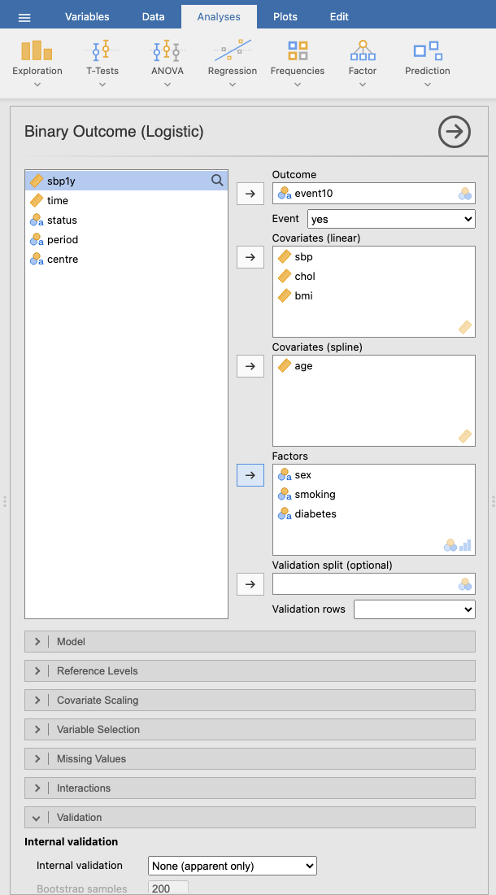
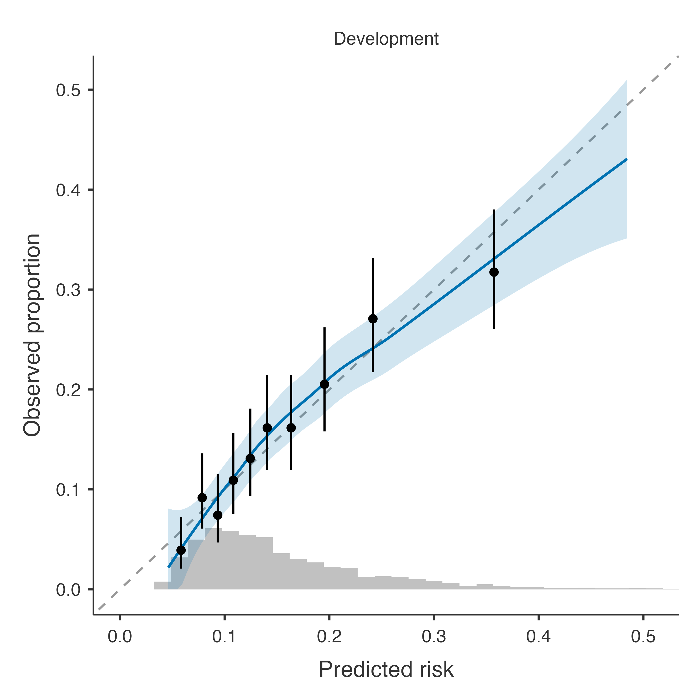
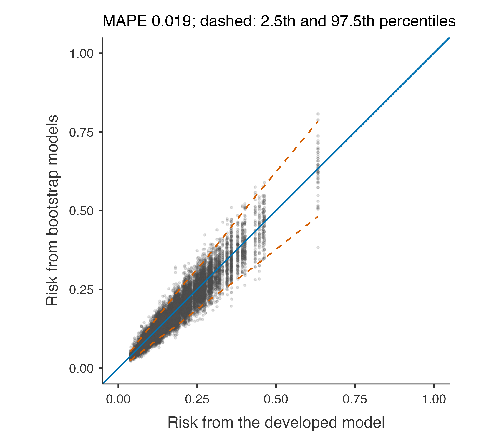
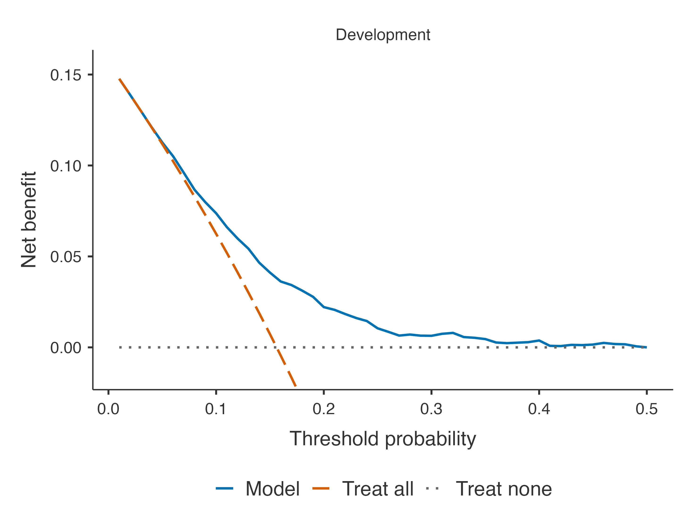

The 10-year risk of a cardiovascular event: descriptives, effects, performance with bootstrap optimism correction, calibration, stability, sample size and clinical utility.
Question. Can routine clinical data — age, sex, smoking, blood pressure, cholesterol, body mass index and diabetes — predict which patients of the heart cohort will have a cardiovascular event within 10 years? How good would the predictions be in new patients of the same population, and would they help to decide whom to treat?
Step 1: the panel
Open the heart cohort (☰ → Open → Data Library → Clinical Prediction Models → Heart cohort, simulated) and Prediction → Binary Outcome (Logistic). Set:
Descriptive table; Effects: crude and adjusted; Likelihood ratio tests; Model equation; Sample size adequacy
Clinical Utility
Classification at a threshold of 0.2; Decision curve
Plots
Calibration plot, ROC curve, Risk distribution
Options
Explanations

Figure 1: Prediction → Binary Outcome (Logistic) in jamovi with the variables of this example; the collapsed sections below hold the other options of the table.
Age enters as a restricted cubic spline: a smooth curve instead of a straight line on the log-odds scale, because there is no reason to assume that each year adds the same risk. Systolic pressure is scaled per 10 mmHg so that its odds ratio is readable.
Note. Event: event10 = yes. Rows with a missing outcome or predictor are excluded (complete-case analysis).
2292 patients have every variable; 108 were excluded for a missing value (cholesterol or body mass index). Complete-case analysis is acceptable when, as here, few values are missing; the missing data example treats them properly. With 358 events the model has about 36 events per candidate parameter (10 parameters: 1 each for sbp, chol and bmi, 3 for the spline of age, 1 for sex, 2 for smoking, 1 for diabetes).
Descriptives (Development Data)
no
yes
Total
Missing
Patients
n
2031
369
2400
sbp
mean (SD)
119.56 (15.58)
124.92 (15.56)
120.38 (15.70)
0
chol
mean (SD)
5.48 (0.99)
5.70 (1.05)
5.52 (1.01)
40
bmi
mean (SD)
26.98 (4.52)
27.65 (4.37)
27.08 (4.50)
70
age
mean (SD)
59.71 (9.73)
62.17 (10.20)
60.08 (9.84)
0
sex
female
1024 (50.4%)
147 (39.8%)
1171 (48.8%)
0
male
1007 (49.6%)
222 (60.2%)
1229 (51.2%)
smoking
never
1053 (51.8%)
155 (42.0%)
1208 (50.3%)
0
former
626 (30.8%)
102 (27.6%)
728 (30.3%)
current
352 (17.3%)
112 (30.4%)
464 (19.3%)
diabetes
no
1893 (93.2%)
316 (85.6%)
2209 (92.0%)
0
yes
138 (6.8%)
53 (14.4%)
191 (8.0%)
Note. Development rows, before excluding missing values; percentages of the non-missing values.
The descriptive table compares patients with and without the event: those with an event were older, more often men, smokers and diabetic, with higher blood pressure and cholesterol.
Step 3: the effects
Odds Ratios
Crude
Adjusted
OR
Lower
Upper
p
OR
Lower
Upper
p
sbp
per 10 units
1.24
1.153
1.33
< .001
1.19
1.106
1.29
< .001
chol
per unit
1.23
1.102
1.37
< .001
1.27
1.133
1.42
< .001
bmi
per unit
1.03
1.007
1.06
.013
1.02
0.993
1.05
.157
age
Q3 vs Q1 (66 vs 53)
1.14
0.836
1.55
< .001
1.01
0.736
1.39
.011
sex
female
1.00
< .001
1.00
< .001
male
1.58
1.254
1.99
< .001
1.59
1.256
2.02
< .001
smoking
never
1.00
< .001
1.00
< .001
former
1.09
0.830
1.44
.531
1.12
0.846
1.48
.432
current
2.18
1.652
2.87
< .001
2.19
1.650
2.91
< .001
diabetes
no
1.00
< .001
1.00
< .001
yes
2.22
1.566
3.14
< .001
2.18
1.510
3.15
< .001
Note. Crude: each predictor alone, on the same rows. Adjusted: in the prediction model.
Note. Spline predictors: odds ratio between the third and the first quartile; the p is the likelihood ratio test of the whole (non-linear) association.
Note. The p on a factor's reference row is the likelihood ratio test of the factor.
The crude odds ratios come from each predictor alone; the adjusted ones from the prediction model. Each 10 mmHg of systolic pressure multiplies the odds of an event by 1.19 (adjusted), current smoking by 2.19 compared with never smoking, diabetes by 2.18.
The spline of age is summarised by the odds ratio between its third and first quartile: 1.14 crude but only 1.01 adjusted. That looks odd for the strongest risk factor of cardiovascular disease — the selection example shows why (an interaction with sex).
In a prediction model these odds ratios are a description, not the result. The result is the risk they produce, and the question is whether it is accurate.
Likelihood Ratio Tests
Term
χ²
df
p
sbp
20.75
1
< .001
chol
16.82
1
< .001
bmi
2.00
1
.157
age
11.16
3
.011
age: non-linear
4.62
2
.099
sex
15.06
1
< .001
smoking
29.72
2
< .001
diabetes
15.94
1
< .001
Note. Each test drops the term from the model (a predictor with its non-linear and interaction terms).
The likelihood ratio tests drop each predictor (all its terms) from the model. The non-linear part of the age spline has p = 0.099; body mass index adds little (p = 0.157). Keeping weak predictors that were chosen beforehand is fine: dropping them on their p-value would add selection to the optimism.
Note. AUC: probability that a random event has a higher predicted risk than a random non-event (0.5 = no discrimination). Calibration-in-the-large: 0 is ideal (log-odds). Calibration slope: 1 is ideal; below 1 the predictions are too extreme (overfitting). O/E: observed / expected events. ICI, E50, E90, Emax: mean, median, 90th percentile and maximum absolute difference between the predicted and the (smoothed) observed risk. Brier: mean squared error of the predicted risks (lower is better); scaled Brier: 1 − Brier / Brier of a model without predictors.
Discrimination. The apparent C-statistic is 0.679 (95% CI 0.649–0.708); after bootstrap correction for optimism, 0.668. That is modest, as for most models built on a few routine variables.
Calibration. In the development data calibration-in-the-large is 0 and the slope 1 by construction. The bootstrap estimates that in new patients the slope would be 0.939: the predictions are slightly too extreme. The ICI says the predicted risks are on average 1.1 percentage points from the observed ones.
Overall. The scaled Brier score, 0.047 after correction, means the model explains only a small part of the variation in individual outcomes — again usual for a cardiovascular risk model.

The calibration plot shows the smoothed observed proportion against the predicted risk (with its confidence band), observed proportions in tenths of the predicted risk, and the distribution of predictions at the bottom. In the development data it hugs the diagonal; the honest test is in new patients.
Note. A shrinkage factor well below 1 (e.g. < 0.9) signals overfitting: the coefficients would need to be shrunk towards 0. MAPE: average absolute difference between an individual's risk from the developed model and from models developed in bootstrap samples (Riley & Collins 2023).
The uniform shrinkage factor, 0.939, is the bootstrap calibration slope: multiplying the coefficients by it would remove the expected overfitting. Above 0.9 it is acceptable. The mean absolute prediction error says that a patient’s predicted risk differs on average by 1.9 percentage points between models developed in bootstrap samples of the same size (Riley and Collins 2023); the instability plot shows it patient by patient.

Step 6: was the sample large enough?
Sample Size Adequacy (Riley et al. 2020)
Criterion
Required N
Required events
Events per parameter
1. Shrinkage factor ≥ 0.9
1934
302.1
30.21
2. Optimism in Nagelkerke R² ≤ 0.05
333
52.0
5.20
3. Overall risk within ± 0.05
203
31.7
3.17
Minimum required
1934
302.1
30.21
This development data
2292
358.0
35.80
Note. Candidate parameters (excluding the intercept): 10; outcome proportion: 0.156; anticipated Cox–Snell R²: 0.045 (optimism-corrected, this model).
Note. The development data meet the minimum sample size.
With the model’s own optimism-corrected Cox–Snell R², the criteria of Riley et al. (2020) require 1934 patients (driven by the shrinkage criterion); the data have 2292. The data are sufficient, but not by much: a model with many more candidate parameters would need penalisation or more data.
Step 7: clinical utility
Classification — Counts
Data set
Threshold
TP
FP
FN
TN
Development
0.200
150
397
208
1537
Classification — Accuracy
95% CI
Data set
Measure
Estimate
Lower
Upper
Development
Sensitivity
41.9 %
36.9 %
47.1 %
Specificity
79.5 %
77.6 %
81.2 %
PPV
27.4 %
23.9 %
31.3 %
NPV
88.1 %
86.5 %
89.5 %
Accuracy
73.6 %
71.8 %
75.4 %
At a risk threshold of 20% — treat patients whose 10-year risk is above 20% — the model identifies 42% of the patients who will have an event (sensitivity), and 27% of those treated would have had an event (positive predictive value).
Net Benefit
Data set
Threshold
Model
Treat all
Gain
Interventions avoided per 100
Development
0.0500
0.1127
0.1118
0.0009
1.66
0.1000
0.0737
0.0624
0.0113
10.17
0.2000
0.0221
-0.0548
0.0221
30.76
Note. Net benefit = true positives/N − false positives/N × t/(1 − t), at threshold t. Gain: over the better of treating all and treating none. Interventions avoided per 100: fewer false positives than treating all, at the same benefit.

The decision curve compares using the model with treating everyone and treating no one. From thresholds of about 6% the model has a clearly higher net benefit than treating all; at 20% it avoids 31 unnecessary treatments per 100 patients compared with treating everyone, at the same benefit. At lower thresholds treating everyone is about as good: a clinician who would treat at such a low risk does not need the model.
The equation, with the spline formula and the coding of every predictor, is what a paper must report so that others can compute the risk (Collins et al. 2024). Export model (JSON), under Save and Explain, writes the same model as a file that Validate a Published Model reads (see published models). Save to the data adds the predicted risk and the linear predictor as new columns of the spreadsheet.
Collins, Gary S, Karel G M Moons, Paula Dhiman, et al. 2024. “TRIPOD+AI Statement: Updated Guidance for Reporting Clinical Prediction Models That Use Regression or Machine Learning Methods.”BMJ 385 (April): e078378. https://doi.org/10.1136/bmj-2023-078378.
Riley, Richard D., and Gary S. Collins. 2023. “Stability of Clinical Prediction Models Developed Using Statistical or Machine Learning Methods.”Biometrical Journal 65 (8). https://doi.org/10.1002/bimj.202200302.
Riley, Richard D, Joie Ensor, Kym I E Snell, et al. 2020. “Calculating the Sample Size Required for Developing a Clinical Prediction Model.”BMJ, March, m441. https://doi.org/10.1136/bmj.m441.